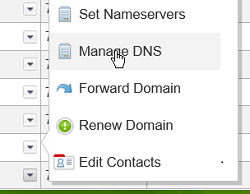
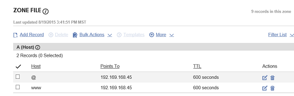

Redirect www to Non-www with Apache - CentOS 7, Fedora
Difficulty: 2
Time: 15
Let's assume that you have a domain with and without the www prefix: www.coolexample.com and coolexample.com. Both display the same content. Permanent redirect or "301 Redirect" is the type of redirect in which you redirect your users from one domain to the other.
This article walks you through the process of setting up redirects on CentOS 7 and Fedora 20, 21.
Before starting, make sure to complete the initial server setup on your server and to install Apache.
To install Apache:
sudo yum update
sudo yum install httpd
Configure DNS records
For this article we'll use a COMPANY_NAME domain.
-
Assuming that you have a domain with COMPANY_NAME, log into the account manager page.
- Click Manage in the Domains section.

-
This will take you to the list of domains you have with COMPANY_NAME. Click the drop down button on the domain that you want to work with and click on MANAGE DNS.

If you don't see a record for your domain, create one. You should also create another A record or CNAME record with the hostname "www" in the HOST field. Make sure to type in the IP address of your server in the POINTS TO field.
Here's how both the records will look like:

You should now be able to access both the www and non-www domains of your server.
Enable Rewrite, and create .htaccess
We'll use the .htaccess file to hold the redirect rules. By default, the Rewrite module is enabled. In case it isn't enabled, edit the Apache configuration file.
-
Open the modules section of the Apache configuration file.
sudo vim /etc/httpd/conf.modules.d/00-base.conf
-
Add the following line if it isn't already present:
LoadModule rewrite_module modules/mod_rewrite.so
-
Open the configuration file.
sudo vim /etc/httpd/conf/httpd.conf
-
In the configuration block that corresponds to the DocumentRoot (in this case
/var/www/html), replace AllowOverride None with AllowOverride All.
The Directory section resembles this:
<Directory /var/www/html>
Options Indexes FollowSymLinks MultiViews
AllowOverride All
Order allow,deny
allow from all
</Directory>
If your first configuration block doesn't include the Options Indexes FollowSymLinks line, it means that line is in its own separate section, and you'll need to change the AllowOverride for that block as well.
Here's an example of how that might look:
<Directory /var/www/html>
Options Indexes FollowSymLinks MultiViews
AllowOverride All
# Allow open access:
Require all granted
</Directory>
...
# The Options directive is both complicated and important. Please see
# http://httpd.apache.org/docs/2.4/mod/core.html#options
# for more information.
#
Options Indexes FollowSymLinks
#
# AllowOverride controls what directives may be placed in .htaccess files.
# It can be "All", "None", or any combination of the keywords:
# Options FileInfo AuthConfig Limit
#
AllowOverride All
...
-
Save and exit the file.
-
Restart Apache for the changes to take effect.
sudo systemctl restart httpd
-
Navigate to the DocumentRoot directory (in this case
/var/www/html).
cd /var/www/html
-
Create a
.htaccess file to enter the redirection information. There are two options.We'll take a look at both.
sudo vim .htaccess
Option 1: Redirect www to non-www
-
If you want to redirect from www to non-www, type the following block of text in the
.htaccess file.
RewriteEngine On
RewriteBase /
RewriteCond %{HTTP_HOST} ^www\.(.*)$ [NC]
RewriteRule ^(.*)$ http://%1/$1 [R=301,L]
If using HTTPS, replace http with https in the last line, RewriteRule.
-
Save and exit.
-
To validate your redirection, use the
curl command to retreive your domain.
curl -I www.coolexample.com
The following displays on the console:
HTTP/1.1 301 Moved Permanently
Date: Thu, 20 Aug 2015 20:52:30 GMT
Server: Apache/2.4.6 (CentOS) OpenSSL/1.0.1e-fips
Location: http://coolexample.com/
Content-Type: text/html; charset=iso-8859-1
You can also verify the redirection by going to www.coolexample.com in your browser. You are redirected to coolexample.com.
Option 2: Redirect non-www to www
-
If you want to redirect from www to non-www, type the following block of text in the
.htaccess file.
RewriteEngine On
RewriteBase /
RewriteCond %{HTTP_HOST} !^www\. [NC]
RewriteRule ^(.*)$ http://www.%{HTTP_HOST}/$1 [R=301,L]
If using HTTPS, replace http with https in the last line RewriteRule.
-
Save and exit.
-
To validate your redirection, use the
curl command to retreive your domain.
curl -I coolexample.com
The following displays on the console:
HTTP/1.1 301 Moved Permanently
Date: Sun, 23 Aug 2015 00:11:10 GMT
Server: Apache/2.4.6 (CentOS)
Location: http://www.coolexample.com/
Content-Type: text/html; charset=iso-8859-1
You can also verify the redirection by going to http://coolexample.com in your browser. You are redirected to www.coolexample.com.
Conclusion
With this article, you have learned to create a permanent redirect with Apache using the Rewrite module.